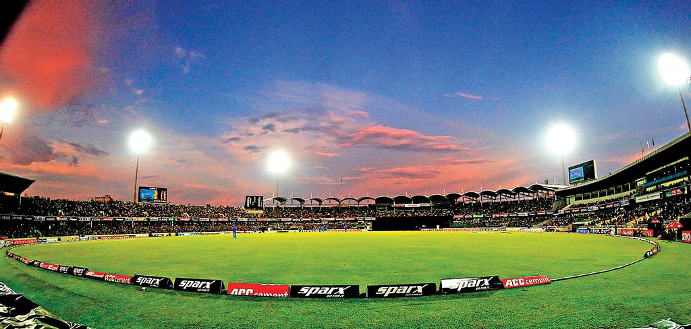

| Refresh time: |

প্রকাশ: ১৬ ডিসেম্বর
মিরপুর যেন ‘টি–টোয়েন্টিপুর’
মিরপুর শেরেবাংলা জাতীয় ক্রিকেট স্টেডিয়াম। হোম অব বাংলাদেশ ক্রিকেট। চাইলে শেরেবাংলা স্টেডিয়ামকে হোম অব টি–টোয়েন্টি ক্রিকেটও বলতে পারেন। রেকর্ড–পত্তরও সাক্ষী হিসেবে কথা বলবে আপনার হয়ে। কম তো নয়, এ পর্যন্ত ২৯৮টি স্বীকৃত টি–টোয়েন্টি টুর্নামেন্ট আয়োজিত হয়েছে শেরেবাংলায়। যেখানে অন্য কোনো ভেন্যু পৌনে ২০০ টি–টোয়েন্টি ম্যাচও আয়োজন করতে পারেনি। বাংলাদেশের ক্রিকেট কতটা শেরেবাংলাকেন্দ্রিক, সেটির প্রমাণ দেয় এবারের বঙ্গবন্ধু টি–টোয়েন্টি কাপই। ২৪ ম্যাচের টুর্নামেন্ট, সব ম্যাচেরই ভেন্যু শেরেবাংলা স্টেডিয়াম। এতে অবশ্য করোনাভাইরাসের বড় ভূমিকা। তবে করোনাভাইরাস শব্দটা আতঙ্ক হিসেবে দেখা দেওয়ার আগেও বাংলাদেশের টি–টোয়েন্টি টুর্নামেন্টগুলোর বেশির ভাগ ম্যাচ শেরেবাংলা স্টেডিয়ামেই হয়েছে।মিরপুরে যেখানে টি–টোয়েন্টি ম্যাচের সংখ্যা প্রায় ৩০০ ছুঁই ছুঁই, সেখানে বাংলাদেশে দ্বিতীয় সর্বোচ্চ টি–টোয়েন্টি আয়োজন করা চট্টগ্রামের জহুর আহমেদ চৌধুরী স্টেডিয়ামের ম্যাচ সংখ্যা মাত্র ৭৯টি। সারা বিশ্ব মিলিয়ে টি–টোয়েন্টি আয়োজনে শেরেবাংলার পরেই আছে দুবাই ইন্টারন্যাশনাল ক্রিকেট স্টেডিয়াম। ১৭১টি ম্যাচ হয়েছে সংযুক্ত আরব আমিরাতের ভেন্যুটিতে। শেরেবাংলা জাতীয় স্টেডিয়ামে প্রথম স্বীকৃত টি–টোয়েন্টি ম্যাচ হয়েছে ২০১০ সালের ১১ এপ্রিল। জাতীয় ক্রিকেট লিগ টি–টোয়েন্টির সেই ম্যাচে খেলে চট্টগ্রাম বিভাগ ও রাজশাহী বিভাগ। যেই ম্যাচে রাজশাহীর হয়ে খেলেন অস্ট্রেলীয় ব্যাটসম্যান এইডেন ব্লিজার্ডও। প্রথমে ব্যাট করে চট্টগ্রাম ১৯.৩ ওভারে অলআউট ১৩২ রানে। ফিফটি পেয়েছিলেন দলটির ওপেনার উত্তম সরকার। ২৯ বলে ৪ চার ও ৩ ছক্কায় ৫১ রান করেছিলেন উত্তম। রাজশাহীর পেসার মুক্তার আলী ৪ ওভারে ২২ রান দিয়ে নিয়েছিলেন ৩ উইকেট। এই পারফরম্যান্স দিয়ে ম্যাচসেরাও হয়ে যান মুক্তার। ১৩৩ রানের লক্ষ্যটা ১৭.১ ওভারেই ৪ উইকেট হারিয়ে ছুঁয়ে ফেলে রাজশাহী। ৩৭ বলে ৮ চারে ৫৬ রান করে অপরাজিত ছিলেন নাঈম ইসলাম। ২০১০ সালে ১৫টি টি–টোয়েন্টি ম্যাচ হয় শেরেবাংলায়। এরপর আন্তর্জাতিক টি–টোয়েন্টি, বাংলাদেশ প্রিমিয়ার লিগ, ঢাকা প্রিমিয়ার লিগ ও আর বেশ কয়েকটি টি–টোয়েন্টি টুর্নামেন্টের খেলা হয়েছে এখানে।
প্রকাশ: ১৬ ডিসেম্বর
ঢাকাকে হারিয়ে ফাইনালে চট্টগ্রাম
টুর্নামেন্টজুড়েই গাজী গ্রুপ চট্টগ্রামকে টেনেছে তাদের বোলিং লাইনআপ। জেমকন খুলনার বিপক্ষে বঙ্গবন্ধু টি-টোয়েন্টি টুর্নামেন্টের প্রথম কোয়ালিফায়ারে বোলারদের দিনটা বাজে গিয়েছিল। চট্টগ্রামও সেদিন হারে বাজেভাবে। আজ মিরপুর শেরেবাংলা স্টেডিয়ামে দ্বিতীয় কোয়ালিফায়ারে বেক্সিমকো ঢাকার বিপক্ষে চট্টগ্রামের বোলারদের দেখা গেল চেনা ছন্দে। দলও জিতল সহজে। ৭ উইকেটের বিশাল জয়ে চট্টগ্রাম উঠল টুর্নামেন্টের ফাইনালে। শুক্রবার ফাইনালে জেমকন খুলনার বিপক্ষে খেলবে চট্টগ্রাম। হেরে বাদ পড়ল ঢাকা। আজকের ম্যাচের আগে ৮ ম্যাচ খেলা মোস্তাফিজুর রহমান নিয়েছিলেন ১৮ উইকেট। উইকেটশিকারিদের তালিকার শীর্ষে তিনি। আরেক বাঁহাতি পেসার শরিফুল ইসলামও উইকেটের দেখা পাচ্ছিলেন। ৮ ম্যাচে নিয়েছিলেন ১২ উইকেট। আজ আগে ব্যাট করা ঢাকার বিপক্ষে মোস্তাফিজ নিয়েছেন ৩ উইকেট, শরিফুল ২টি। এই দুই বোলারকে সাহায্য করেছেন নাহিদুল ইসলাম, রকিবুল হাসান ও মোসাদ্দেক হোসেন। আউটফিল্ডে দুর্দান্ত ফিল্ডিংয়ের কথাও আলাদা করে বলতে হয়। ঢাকাকে ১১৬ রানে অলআউট করতে যা করা দরকার ছিল, বোলিং ও ফিল্ডিংয়ে ঠিক তা–ই করেছে চট্টগ্রাম। বাঁচা–মরার এই ম্যাচে ঢাকার কোচ খালেদ মাহমুদ শুরুতেই জুয়া খেলেন। হার্ডহিটার মুক্তার আলীকে লোয়ার অর্ডার থেকে তুলে এনে সাব্বির রহমানের সঙ্গে নামান ওপেনিংয়ে। কিন্তু জুয়ায় উল্টো হেরেছেন ঢাকার কোচ–ই। সাব্বির আউট হন দ্রুত। এরপরই আউট মুক্তার। ইনিংস শুরু হতে না হতেই দ্রুত উইকেট হারানোর চাপ নিয়ে ব্যাট করতে নামেন অধিনায়ক মুশফিকুর রহিম ও মোহাম্মদ নাঈম। শুরুতে সময় নিয়ে থিতু হওয়ার চেষ্টা ছিল দুজনের মধ্যেই। কিন্তু আজ তা হতে দেননি মোহাম্মদ সালাউদ্দিনের ছাত্ররা। রান করার কোনো সুযোগই দেননি মুশফিকদের। বাধ্য হয়ে বড় শটে যেতে হয় নাঈম ও মুশফিককে। দুজনই দুই অঙ্কের ঘরে গিয়ে আউট হন ছক্কা মারার চেষ্টায়। ইয়াসির আলী চেষ্টা করেন রান বাড়ানোর। তখন আবার আগুনঝরা বোলিং করা শুরু করেন মোস্তাফিজ। শেষে দ্রুত উইকেট নিয়ে ঢাকাকে অলআউট করেন ১১৬ রানে। ২৫ রান করে আউট হন মুশফিক। আল–আমিনের ব্যাট থেকেও আসে ২৫ রান। ২৪ রান করেন ইয়াসির আলী। ছোট্ট স্কোর তাড়া করতে খুব একটা বেগ পেতে হয়নি চট্টগ্রামকে। ৩ উইকেট হারিয়ে ৫ বল বাকি থাকতেই লক্ষ্যে পৌঁছে যায় চট্টগ্রাম। লিটন-সৌম্য পুরো টুর্নামেন্টে যা করেছেন, আজও তা–ই করেছেন। দলকে শুরুতে এনে দেন ভালো সূচনা। ৪৪ রানের ওপেনিং জুটি ভেঙেছে সৌম্যর রানআউটে। রানরেটের চাপ না থাকায় জুটি ভেঙেও খুব একটা সুবিধা করতে পারেনি ঢাকা। অধিনায়ক মোহাম্মদ মিঠুন ও ওপেনার লিটন মিলে দলকে নিয়ে যান জয়ের খুব কাছে। ম্যাচটা শেষ করে আসতে পারতেন দুজনই। কিন্তু দুজনই সীমানায় ক্যাচ দিয়ে আউট হন। লিটনের ব্যাট থেকে এসেছে চট্টগ্রাম ইনিংসের সর্বোচ্চ ৪০ রান, মিঠুন ৩৪। শেষের দিকে মোসাদ্দেক হোসেন (২) ও শামসুর রহমান (৯) অপরাজিত থেকে ম্যাচ শেষ করে আসেন।
প্রকাশ: ১৬ ডিসেম্বর
ওয়েস্ট ইন্ডিজ সিরিজের সূচি ঘোষণা বিসিবির
ওয়েস্ট ইন্ডিজ দলের বাংলাদেশ সফরের সূচি আজ আনুষ্ঠানিকভাবে প্রকাশ করেছে বাংলাদেশ ক্রিকেট বোর্ড (বিসিবি)। ৩ ওয়ানডে ও ২ টেস্ট খেলতে ক্যারিবীয়রা বাংলাদেশে আসবে আগামী ১০ জানুয়ারি। আইসিসির ভবিষ্যৎ সফর (এফটিপি) সূচি অনুযায়ী সিরিজে বাংলাদেশ ও ওয়েস্ট ইন্ডিজের খেলার কথা ছিল ৩ টেস্ট, ৩ ওয়ানডে ও ২ টি–টোয়েন্টি। বিসিবি ও ক্রিকেট ওয়েস্ট ইন্ডিজের (সিডব্লুআই) যৌথ সিদ্ধান্ত অনুযায়ী, সূচি থেকে বাদ পড়েছে একটি টেস্ট ও দুটি টি–টোয়েন্টি। বিসিবি এর আগে জানিয়েছিল, উইন্ডিজ দলের খেলোয়াড়েরা লম্বা সফরে আগ্রহী নন। সিডব্লুআই তাদের অনুরোধ করেছে সফরের দৈর্ঘ্য ছোট করতে। সে অনুরোধ রেখেই বিসিবি সূচি কাটছাঁট করেছে। ১০ জানুয়ারি ঢাকায় পৌঁছানোর পর উইন্ডিজ দলের প্রথম সপ্তাহটা কাটবে স্বাস্থ্য নির্দেশিকা অনুযায়ী কোয়ারেন্টিন–করোনা পরীক্ষা করে। ক্যারিবীয়রা ১৮ জানুয়ারিতে বিকেএসপিতে একটি এক দিনের প্রস্তুতি ম্যাচ খেলবে। ২০ জানুয়ারি মিরপুর শেরেবাংলা স্টেডিয়ামে তিন ম্যাচ সিরিজের প্রথম ওয়ানডে দিয়ে ১০ মাস পর বাংলাদেশে ফিরবে আন্তর্জাতিক ক্রিকেট। একই ভেন্যুতে ২২ জানুয়ারি সিরিজের দ্বিতীয় ওয়ানডে। সিরিজের তৃতীয় ওয়ানডে হবে চট্টগ্রামের জহুর আহমেদ চৌধুরী স্টেডিয়ামে। ওয়ানডে সিরিজের পর ২৮ থেকে ৩১ জানুয়ারি এম এ আজিজ স্টেডিয়ামে থাকছে চার দিনের একটি প্রস্তুতি ম্যাচ। ৩ ফেব্রুয়ারি চট্টগ্রামে শুরু দুই টেস্ট সিরিজের প্রথমটি। ১১ ফেব্রুয়ারি মিরপুরে শুরু সিরিজের শেষ টেস্ট।
প্রকাশ: ১৬ ডিসেম্বর
‘সাকিব তো সাকিবই, তার অনুপস্থিতি ভোগাবে খুলনাকে’
সোমবার গাজী গ্রুপ চট্টগ্রামকে ৪৭ রানে পরাজিত করে বঙ্গবন্ধু টি-টোয়েন্টি কাপের ফাইনালে উঠেছে জেমকন খুলনা। শুক্রবার মিরপুর শেরেবাংলা স্টেডিয়ামে অনুষ্ঠিত হবে টুর্নামেন্টের ফাইনাল। ফাইনালে তাদের প্রতিপক্ষ বেক্সিমকো ঢাকা কিংবা গাজী গ্রুপ চট্টগ্রাম। তবে সে ফাইনালে খেলা হচ্ছে না বিশ্বসেরা অলরাউন্ডার সাকিব আল হাসানের। তার শ্বশুর অসুস্থ হয়ে পড়ায় ফাইনাল না খেলেই যুক্তরাষ্ট্রে যেতে হচ্ছে সাকিবকে। ফাইনালে সাকিবের অনুপস্থিতি প্রভাব ফেলবে মনে করছেন খুলনার কোচ মিজানুর রহমান বাবুল। বাবুল বলেন, “সাকিব তো সাকিবই। তার অনুপস্থিতি অবশ্যই দলে প্রভাব ফেলবে। সে দলে থাকা মানে প্রতিপক্ষ দলের ওপর চাপ আসে। অবশ্যই আমাদের দলে একটা ঘাটতি থাকবে। একজন বাঁহাতি স্পিনার, একজন ব্যাটসম্যান এবং একজন অভিজ্ঞ খেলোয়াড় চলে যাচ্ছে।” খুলনার কোচ আরও বলেন, “সবার আগে পরিবার, তারপর খেলাধুলা। সাকিব চলে যাবে, আশা করি যে উদ্দেশ্যে গিয়েছে সেটা সফল হবে।” প্রথম কোয়ালিয়ারে দুর্দান্ত খেলেছিলেন সাকিব। ব্যাট হাতে ১৫ বলে ২৮ রানের ঝড়ো ইনিংসের পর বল হাতেও নিয়েছিলেন এক উইকেট।| ©Prothom alo,Kaler kontho |